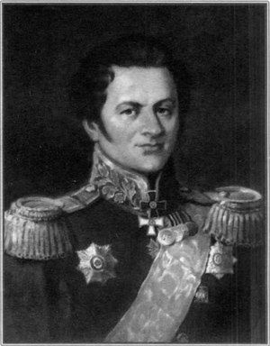

Засядько Олександр Дмитрович
Олекса́ндр Дми́трович Зася́дько (1779 с. Лютенька — 8 червня 1837, Харків) — інженер-артилерист Російської імператорської армії, українського походження, генерал-лейтенант артилерії. Конструктор та фахівець з розробки ракетної зброї.
Народився в с. Лютенька Гадяцького полку (нині Полтавської області) в козацькій родині Засядьків.
Нащадок старовинного козацького роду. Прапрадід, Яків Засядько був реєстровим козаком Хорольської сотні і Лубенським полковником (1659). Прадід Лук’ян Якович і дід Данило Лук’янович – сотники Лютенської сотні (1-ша пол. XVIII ст.). Батько Олександра, Дмитро Данилович Засядько був головним гармашем Запорозької Січі, доводився родичем кошовому отаманові Петрові Калнишевському
Освіту здобував в Артилерійському і Інженерному шляхетському кадетському корпусі. Брав участь в італійському поході[ru] Суворова, служив під командуванням Кутузова, штурмував Ізмаїл. Учасник російсько-турецької, французько-російської та інших воєн. Від 1815 року, продавши маєток біля Одеси, за виручені кошти розпочав експерименти зі створення ракетної зброї. Першим (1817) створив кілька типів бойових порохових ракет та спеціальний пусковий пристрій, зорганізував їхнє виробництво і розробив тактику використання. Очолював Артилерійське училище, Охтинський пороховий завод[ru] та Гарматний ливарний двір. Розроблені ним ракети мали дальність до 2670 метрів[2] (приблизно як і у тогочасних англійських ракет Конгріва — до 2 700). Вперше в світі побудував ракетну пускову установку, що дозволяла вести одночасне ураження шістьма ракетами (прообраз сучасних РСЗВ). Сконструювавши пускові станки, що дозволяли вести залповий вогонь та пристрої прицілювання до них, розробив тактику бойового застосування ракетної зброї в РІА. Заснував перший в імперії ракетний завод (Петербург), який 1864 р. перевели до Миколаєва, та Вище артилерійське училище. Створивши «Ракетну роту № 1», започаткував створення нового виду збройних сил. 1827 року був призначений начальником штабу артилерії. Першу ракетну атаку продемонстрував в червні 1828 року під час російсько-турецької війни в штурмі фортеці Бреїла (нині Румунія). Атака була надзвичайно успішною — ворог здався й відступив. Потім були бомбардування Сілістри та Варни, що остаточно переконало і прихильників, і опонентів Засядька в ефективності нової зброї.